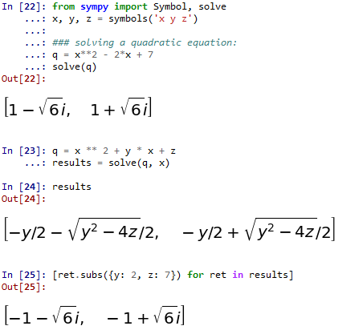
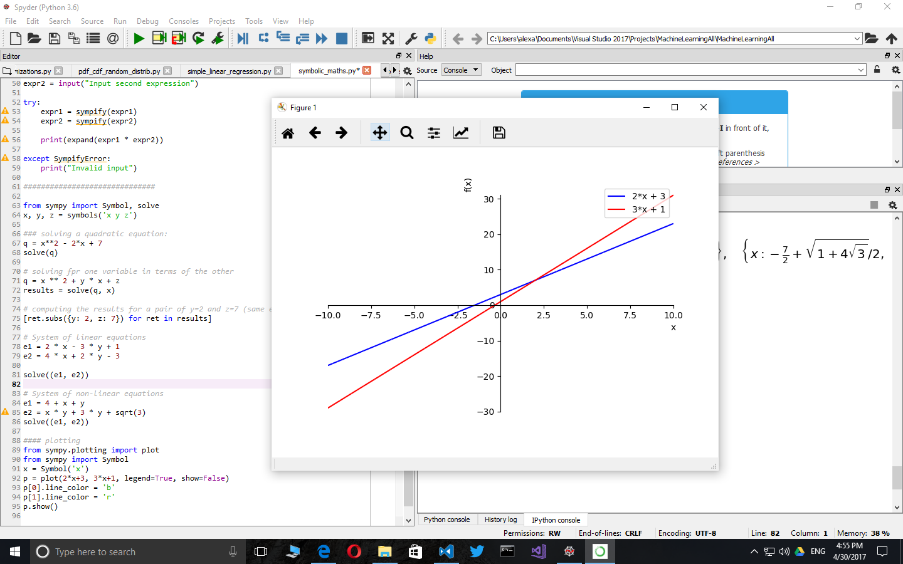
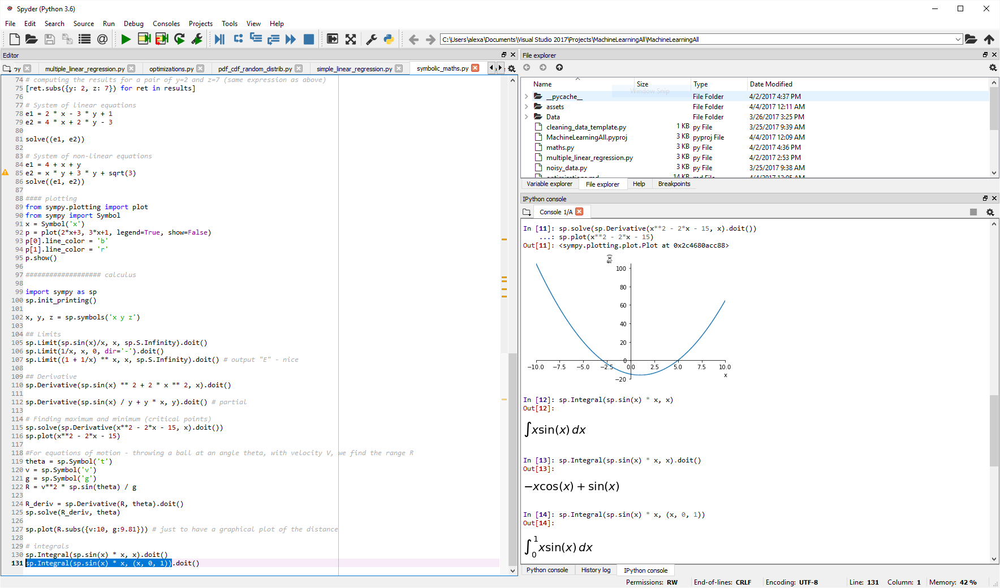

Symbolic Maths in Python
Ability to perform symbolic computations is a crucial component of any mathematics-oriented package. Symbolic mathematics is used to work with complex expressions, sets and probabilities, perform integrals or derivatives, plot charts based on user input, all without explicit numeric computations. This way, the Python interpreter becomes very much like a piece of paper on which one can jot down equations. To exemplify these, by the end of the article I will implement a short gradient descent function to demonstrate the power of sympy to code easy-to-work-with generic algorithms.
Basic usage
from sympy import Symbol, symbols
X = Symbol('X')
expression = X + X + 1
print(expression)
a, b, c = symbols('a, b, c')
expression = a*b + b*a + a*c + c*a
print(expression)
with the output:
2*X + 1
2*a*b + 2*a*c
We alredy see simplification for basic expresssion.
Factorization and expansion
### factorization and expansion
import sympy as sp
x, y = sp.symbols('x, y')
expr = sp.factor(x**2 - y**2)
print(expr)
expr = sp.expand(expr)
print(expr)
with the expected output:
(x - y)*(x + y)
x**2 - y**2
Pretty printing
And the code:
import sympy as sp
sp.init_printing() # or init_session(). init_session does much more
x = sp.Symbol('x')
sp.pprint(sp.Integral(sp.sqrt(1/x), x))
with the output:
⌠
⎮ ___
⎮ ╱ 1
⎮ ╱ ─ dx
⎮ ╲╱ x
⌡
Computing the numeric result of a symbolic expression
from sympy import init_session
init_session()
expr = x**2 + 2*x*y + y**2
expr.subs({x:1, y:2})
with the output of 9
We can also use expression substitution, like this:
expr.subs({x:y-1})
simplify(expr.subs({x:y-1}))
The first line outputs y**2 + 2*y*(y - 1) + (y - 1)**2 while the second line simplifies the expression to 4*y**2 - 4*y + 1
Reading expressions from user input
Let's write a simple program which computes the expanded product of two expressions:
from sympy import init_session
init_session()
expr1 = input("Input first expression")
expr2 = input("Input second expression")
try:
expr1 = sympify(expr1)
expr2 = sympify(expr2)
print(expand(expr1 * expr2))
except SympifyError:
print("Invalid input")
with the following input / output:
Input first expression x*2 + y
Input second expression x*3 + y
6*x**2 + 5*x*y + y**2
Solving equations, inequalities and systems of equations
from sympy import Symbol, solve
x, y, z = symbols('x y z')
### solving a quadratic equation:
q = x**2 - 2*x + 7
solve(q)
# solving fpr one variable in terms of the other
q = x ** 2 + y * x + z
results = solve(q, x)
# computing the results for a pair of y=2 and z=7 (same expression as above)
[ret.subs({y: 2, z: 7}) for ret in results]
with the following output if ran from the ipython console

The solve function is not limited only to polynomials. For example, solve(sin(x)/x) will correctly output the value [pi] - docs
Another example for solving more complex equations:
import sympy as sp
# symbolic solving
x, y, z = sp.symbols('x y z')
eq = sp.sin(x) + y * z
print(sp.solve(eq, x))
And the output is [asin(y*z) + pi, -asin(y*z)]. If we want to obtain a numeric result, we can do ret = sp.solve(eq, x) and then [r.subs({y:0.4, z:-0.3}) for r in ret].
For a system of equations, it works like this:
from sympy import Symbol, solve
x, y = symbols('x y')
# System of linear equations
e1 = 2 * x - 3 * y + 1
e2 = 4 * x + 2 * y - 3
solve((e1, e2))
# System of non-linear equations
e1 = 4 + x + y
e2 = x * y + 3 * y + sqrt(3)
solve((e1, e2))
Solving single variable inequalities is a little bit more complex as we need to clasify them according to the solver involved:
- Polynomial inequality: expression is a polynomial (can use
expr.is_polynomial()) - Rational inequality: expression is a rational function of two polynomials (e.g.
(x ** 2 + 4) / (x + 2); can useexpr.is_rational_function()to deternime if the case) - Univariate solver: one variable, nonlinear (e.g. involving functions like
sinorcos)
Link to tutorial here
Plotting
Sympy supports simplified plotting out of the box. This is a handy addition for when we don't want to use matplotlib directly.
from sympy.plotting import plot
from sympy import Symbol
x = Symbol('x')
p = plot(2*x+3, 3*x+1, legend=True, show=False)
p[0].line_color = 'b'
p[1].line_color = 'r'
p.show()

Sets
Beside FiniteSet which I exemplify below, sympy also includes support for infinite sets and intervals.
from sympy import FiniteSet
s1 = FiniteSet(1, 2, 3)
s2 = FiniteSet(2, 3, 4)
s3 = FiniteSet(3, 4, 5)
# Union and intersection
s1.union(s2).union(s3)
s1.intersect(s2).intersect(s3)
# powerset: The powerset() method returns the power-set and not the elements in it.
# This makes it memory friendly and useful for computations
s1.powerset()
# equality
FiniteSet(3) == s1.intersect(s2).intersect(s3)
# inclusion
FiniteSet(3).is_proper_subset(s3) # true
s3.is_subset(s3) # true
s3.is_proper_subset(s3) # false
# cartezian product
# keeps the operation symbolic until iterated through
s = s1*s2*s3
for i in s:
print(i)
# cartesian product with self used to compute arrangements
# unfortunately the syntax below forces computation
s = FiniteSet(*(s1 ** 2)) - FiniteSet(*[x for x in zip(s1, s1)])
len(s)
for i in s:
print(i)
# combinations
s = s1.powerset().intersect(s1 ** 2)
len(s)
for i in s:
print(i)
Playing with probabilities and sets
Let's define the following terms:
- Experiment - a test we want to perform (coin toss, for instance).
- Trial - a single run of an experiment.
- Sample space (S) - all possible outcomes of an experiment. For a coin toss is
{head, tail} - Event (E) - a set of outcomes we are testing for. For example, for a dice roll, event that the result is even is
{2, 4, 6}
Obviously, for a uniform distribution, the probability of an event E is P(E) = len(E) / len(S)
Some formulas:
- Probability of event A and event B:
P(A and B) = P(A intersect B) = P(A) * P(B) - Probability of event A or event B:
P(A or B) = P (A union B) = P(A) + P(B) - P(A) * P(B) - Conditional probability (Bayes Theorem):
P(A|B) = P(B|A) * P(A) / P(B). Speaking of Bayes theorem, this is a very interesting link: Base rate fallacy
dice = FiniteSet(1, 2, 3, 4, 5, 6)
odd = FiniteSet(1, 3, 5)
even = FiniteSet(2, 4, 6)
prime = FiniteSet(2, 3, 5)
p_odd = len(odd) / len(dice)
p_odd_and_prime = len(odd.intersect(prime)) / len(dice)
p_odd_or_prime = len(odd.union(prime)) / len(dice)
Assumptions
The behavior of symbols can be modified through what is called assumptions. Below is a list of assumptions with their default behavior and an usage example.
import sympy as sp
"""
Assumptions:
algebraic: False,
commutative: True,
complex: False,
composite: False,
even: False,
imaginary: False,
integer: False,
irrational: False,
negative: False,
noninteger: False,
nonnegative: False,
nonpositive: False,
nonzero: False, odd: False,
positive: False,
prime: False,
rational: False,
real: False,
transcendental: False,
zero: False
"""
A, B = sp.symbols('A B', commutative=False)
print(A * B == B * A)
### Calculus
The following code should be run line by line in an interpreter like IPython. For my own play, I am using select line + CTRL+ENTER in Spyder.

import sympy as sp
sp.init_printing()
.x, y, z = sp.symbols('x y z')
## Limits
sp.Limit(sp.sin(x)/x, x, sp.S.Infinity).doit()
sp.Limit(1/x, x, 0, dir='-').doit()
sp.Limit((1 + 1/x) ** x, x, sp.S.Infinity).doit() # output "E" - nice
## Derivative
sp.Derivative(sp.sin(x) ** 2 + 2 * x ** 2, x).doit()
# Partial derivative
sp.Derivative(sp.sin(x) / y + y * x, y).doit()
# Finding maximum and minimum (critical points)
sp.solve(sp.Derivative(x**2 - 2*x - 15, x).doit())
sp.plot(x**2 - 2*x - 15)
# For equations of motion - throwing a ball at an angle theta, with velocity V, we find the range R
theta = sp.Symbol('t')
v = sp.Symbol('v')
g = sp.Symbol('g')
R = v**2 * sp.sin(theta) / g
R_deriv = sp.Derivative(R, theta).doit()
sp.solve(R_deriv, theta)
sp.plot(R.subs({v:10, g:9.81})) # just to have a graphical plot of the distance
# Integrals - no interval
sp.Integral(sp.sin(x) * x, x).doit()
# Integrals - with interval
sp.Integral(sp.sin(x) * x, (x, 0, 1)).doit()
A more complex example which employs both derivative and integrals in the same formula: computing the length of the x**2 curve between -1 and 1. Please note that .doit() may only called once.
sp.Integral(sp.sqrt(1 + (sp.Derivative(x ** 2) ** 2)), (x, -1, 1)).doit()
Length of the curve is computed by: Integral(sqrt(1 + (df/dx)**2)) on the desired domain.
A more complex example - gradient descent
import sympy as sp
def grad_descent(f, lmbda, **initial_values):
derivatives = { k: sp.Derivative(f, k).doit() for k in initial_values.keys() }
n_val = f.subs(initial_values)
c_val = n_val
# variable step (used to secure it does not accidentally jump over a peak)
lambda_changes = 4
while lambda_changes > 0:
no_change = True
# advance a little bit each coordinate
for k, v in initial_values.items():
initial_values[k] = initial_values[k] - lmbda * derivatives[k].subs(initial_values)
n_val = f.subs(initial_values)
if n_val + 1e-10 >= c_val:
initial_values[k] = v # preserve the past value
else:
c_val = n_val
no_change = False
if no_change == True:
lambda_changes -= 1
lmbda *= 0.5
return initial_values
if __name__ == "__main__":
sp.init_printing()
# the function to minimize; obviously the minimum is in (0, 0, 0)
x, y, z = sp.symbols('x y z')
f = x ** 2 + y ** 2 + z ** 2
# start with a large lambda factor to exemplify the variable step
# start with a random initial condition
ret = grad_descent(f, 1.0, x=4, y=-5, z=10)
print(ret)
Conclusion
I wrote this article as a short cheat-sheet for myself. Python is a great tool for mathemathics, not only for the numeric but also for the symbolic domain. Libraries like sympy make it both a powerful tool to write large programs but also a useful super easy-to-use desktop calculator. Of course, sympy is much larger than presented here, but the article should be helpful for a quicker start next time you are in front of a mathematical problem.